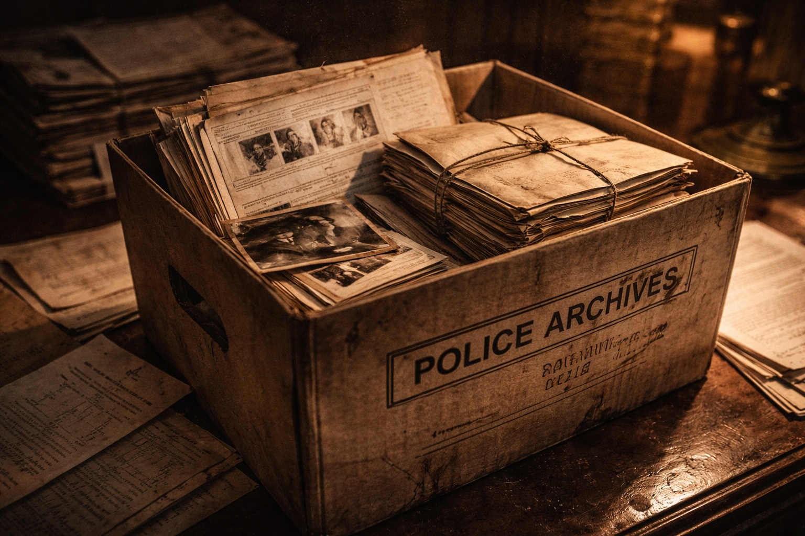

By 2001, I remained at the height of my powers, but my body was wilting under the pressures of criminal jurisprudence, it no longer wanted to be tethered to an overactive mind.
I was fortunate this disconnect did not display itself by a heart attack – rather, it chose to manifest itself by me violently dry-retching during my daily bathroom ablutions. I was agitated at every ring of my mobile and, worryingly, Sue pointed out my ability to snore while semi-conscious.
I deeply regret my beautiful wife took up the slack to appease clients - in fact, my clientele would rather liaiseand discuss issues with Mrs G than have to cope with the aggression of the Blackpudlian. Charm has never been my forte, and an overactive mind, and heavy caseload, meant I wanted to head directly to the important issues and not dally in inconsequential doorways which would not lead to victory.
I believe from a shit childhood, through to being targeted by the State, it was the entry of Sue into my life which caused this disconnect – suddenly, I was surrounded by the love of a woman who was watching her new ‘beau’ implode under Cat A pressures.
I had even tried a spell in the Altrincham Priory, where I was lumped in with a group of people withdrawing from drink and drugs. My ‘fix’ was the inability to refuse to take on more cases and, moreover, with the cases I did have, I could not countenance anything save for the exposing of corrupt activity by law enforcement. Thus, my isolation within the Priory grounds was bliss.
After around 10 days, in a group counselling session, we were tasked with marking (out of 10) our fellow addictive travellers for their perceived progress. All went well until my marks were requested. Members of the group started to giggle, and one guy announced:
‘We can’t mark Nick, as we don’t know why he is here!’
The end point came when I was in front of the senior counsellor in his study. He had my file in front of his nose, looked up and condescendingly stated:
‘Have you thought, Mr Green, of employing a new PA?’
I regret, after an initial pause at the enormity of this question, I looked him in the eyes, saying calmly,
‘Are you taking the piss?’
A silence followed, which I filled with a follow-up,
‘If I had a leg missing, would you recommend hopping?’
I rose to my feet and left, not just the medic, but the Priory itself. These twelve steps were not made for walking… I said my goodbyes to my class mates, who were sad to see me depart, and I wished them all the success in the world in their struggles to rid their lives of addiction. Sue drove me out of the Priory gates and thereby back into my addiction.
Sue and I resolved to move to Spain. This was not a pipe dream, as we acted upon our decision by, in advance, enrolling Lara into an International School in Sotogrande, close to Gibraltar. We would reside in a rented villa near Marbella, and our choice of this destination, I knew,would find favour amongst my legal colleagues… The Costa Del crime.
In the run-up to our departure, I was advising Arran Coghlan. He was the police’s most-hated figure in the North West, whom the authorities believed ran the Stockport drug market. The police believed both he and his gang dished out violence with a degree of alacrity.
Az, for this was his nickname in those years, had become close friends with myself and Sue. I immediately sensed a fellow ‘warrior’,who possessed a sharp and powerful mind. His communication skills were far above my own, and he hated the legal profession more than I did. I thought I had set a high bar…
By the time we met, Arran had already ensured his acquittal by a jury of the gangland murder of Chris Little in 1994. Little was shot dead in the seat of his Mercedes at traffic lights in Marple, near Stockport. Green, in this case, did not signal ‘go’. The police’s prosecution centred upon the motive for the murder, which was claimed to be a power grab by Coghlan. Little was a major player in the drug trade in Stockport and was known for being a bully.
Arran learnt a great deal in the first murder trial he faced, which he deployed to good use in the second, then third murder trials! He remains the only man in English legal history to be acquitted of 3 separate murders spanning 15 years.
Arran leaves nothing to chance and his trial preparation is brutal, as is his treatment of lawyers who fail to follow his clear and concise instructions. He is on red alert at all times, and monitoring attempts to water down (or ignore) his defence. His guard remains raised.
Just as the authorities have files on his character profile, so Arran has on the prosecution team and reviewing lawyer. He will flush out their aggression, and then lay blows on their underbelly. It is not for the faint hearted, but if you are staring down the barrel of a 30 year sentence, it is best to remain alert.
It was inevitable our paths would cross, especially when I opened my Salford office. It is a remarkable coincidence I was representing another man in police custody in Stockport police station when Coghlan was brought into the custody area. He had been arrested for the ‘Little’ murder, and it was like a scene from a Hannibal Lecter film, with ten burly police officers circling Coghlan as he was read his rights by the custody officer.
My first success for Arran was when he contacted me when he had been imprisoned for a minor assault in a pub. He had lost focus because he thought the case was of no consequence and was easy to defend. It was a lesson well learnt, and he departed company with the firm in Stockport who had represented him from his early criminal days.
I obtained his case papers, and I centred upon the decision of the trial judge to permit one damning statement to be read to the jury. English law permits this to occur where a witness cannot be located, or has moved abroad, but, because of the prejudice (of not being able to cross examine a witness to test the veracity of their evidence), it must be carefully monitored by the trial judge.
Kris Gledhill agreed with my assessment this evidence should not have been permitted, especially when we traced the witness who was still in the Manchester area. I instructed Alan Newman QC to conduct the advocacy at the Court of Appeal, as he lectured judges on the law and was well-liked and admired.
I was fearful that the name Coghlan would militate against any legal argument as to the safety of the convictions, however meritorious.
At the hearing my heart sank, as one of the three judges was none other than the Recorder of Manchester! A ‘put-up’ job? Yet, when the Bench took its seat, he appeared to smile and wink at me, and I had to stop myself from turning round to assess if it was to another this greeting was due.
After an hour’s legal argument, the lead judge went straight into his ruling which was in our favour. Mr Coghlan was a man free to leave the dock, and the case of R v Coughlan(misspelt) was duly entered into the hallowed text of Archbold as the lead case on the unavailability of witnesses. Not a bad start for Arran to be able to assess my capabilities as a lawyer.
Arran appeared, into bright sunlight, on the steps of the appeal court to be snapped by photographers. He had been reunited with his belongings, and around his neck he was sporting a chunky gold necklace which had, as its charm, a gun with bullets.
Arran is not one to take a backward step, and his appearance did not surprise me. He had relayed to me that, when the jury acquitted him of the Little murder, he refused to go to the cells. He snorted at the jailers:
‘Get your hands off me. I am an innocent man and I will walk free from the dock.’
The judge, sensing tension, agreed with Mr Coghlan:
‘He is a free man - let him go.’
As Aaron sauntered past the jury, thanking them, he then uttered a remark about traffic lights to the officer in the case. A melee ensued on the court room floor, and the judge sidled out of his court room, knowing full well the boys in blue were beside themselves with anger and frustration at the verdict.
In time, Arran departed the Stockport area to find new pastures in the footballer-infested village of Alderley Edge. He renovated a chapel where, years later, another gangster would meet his end, via a bullet through his ‘napper’ in Coghlan’s en-suite bathroom. The police’s prayers seemed to have been answered, given there were only two people at the chapel at the time of the shooting, but more of that later.
In 1999, prior to my deployment to Andalusia, David Barnshaw had met his death in the most heinous manner. Petrol had been poured into his mouth before the car he was kidnapped in was torched.
The police had no doubt as to which gang was responsible, and the Stockport police along with the Northwest regional crime squad set up a major investigation. They would take their time to ensure Coghlan would walk out of prison aged 60.
The papers were kept updated so they could splash wholly prejudicial material on their front pages. “Manchester cops closing on crime boss” screamed the Manchester Evening News. Another claiming,“The self-styled underworld Mr. Big” was their prime target.
Barnshaw had been bundled into the boot of the car, and he had fully expected, when it halted, to meet a gruesome demise. He had managed to call 999 from his mobile within the confines of the boot. This man’s fear was palpable. This call would form the highlight of any prosecution. It would be played to the jury mid-trial, no doubt leaving them in tears.
The call was all the more harrowing, as the emergency operator kept pleading for the witness’s location, which of course he could not give.
‘I am in the boot of a car…help.’
Barnshaw’s best mate had been forced to travel with the gang so that he could witness this gruesome ordeal. This man was then permitted to depart and relay the night’s events to other would-be ‘freelance’ drug dealers in the Stockport area.
It was in this febrile atmosphere, Sue and I were due to depart into the Spanish sunshine. Arran knew arrests would be made in the near future, and he would, once more, have to face down a murder charge.
Word on the street was the surviving witness had recently been taken into police protection out of the area. He was willing to testify and identify the men responsible for the brutal killing of Barnshaw. This direct evidence would be pivoted with complex forensic and telephone evidence.
Arran had been attending my Salford office when we discussed tactics. To his credit, he did not attempt to halt my departure to Andalucia. He was more than capable of mounting his own legal arguments and hundreds of requests for disclosure. The legal team he nominated would simply follow his instructions, which he would always place into writing in case of memory failure by lawyers and learned counselle…In any event, I would be available at any time should Arran wish to fly things by me.
When Arran is locked up, unlike others who idle their time away in the hopeless belief their lawyers will unpick the Crown’s case, he would be compiling schedules of evidence. From these coloured flowcharts would be produced for distribution amongst the jury. Unlike the Crown’s material, Arran would demonstrate his charts mapped out the “True Matrix” – which is now the nom-de-plume of his current business advising in major criminal cases.
Around 11pm on a weekday night, Sue received a call from Arran.
‘I need to see Nick.’
‘Now?’ enquired Sue.
‘Now please, Sue.’
No further words were needed, not only because we were aware our phones were monitored, but equally as it was obvious there had been a major development.
Shortly thereafter, Arran was sitting on a sofa in my home Marton regaling me with the fact the ‘escapee’ wanted to talk to him! The man who had witnessed Barnshaw’s fiery death, and was now under 24 hour police protection (out of the area) wished to speak directly to Arran. This witness had managed to get a ‘clean’ mobile number to one of Arran’s friends to facilitate the call.
No movie I have ever watched matched the tension in my lounge. Furthermore, this was not light entertainment. Sue’s eyes were on stalks, and I called for silence as I attempted to process the next steps.
Arran wanted to record the call from my landline. This I knew to be a criminal offence in and of itself, as it breached the Telecommunications Act provisions. Further, there was the minor matter this man was to be the star turn in the Crown’s case, to give sworn evidence from behind a screen or maybe by remote video.
It was plain this, in reality, came down to ‘balls’, not legal niceties and the interpretation of Acts of Parliament. I could not seek guidance from my governing body at this time of night and, in any event, they would have counselled that if I made contact with the prime witness, I would, in all likelihood, be arrested and barred from carrying out any further criminal cases.
I believed ‘human rights’ trumped domestic legislation, and it was in the wider public interest for this call to be recorded. After all, if it took place “off tape”, there was no way in God’s world the QC for the Crown would accept Mr G’s interpretation of the call!
I signalled to Arran the call would take place, but with structure and finality. Arran must not lead the witness, and he must permit him to do most of the talking. There would be no second call. It was critical we did not hand the police ammunition to undermine the content of the call.
Our hearts were beating fast when, on the stroke of midnight, Arran dialled the number and waited.
We heard the voice of the protected witness, who seemed calm and pleased to be speaking to Arran. He proceeded to relay the pressures the police had put him and his family under. He mentioned inducements and, critically, to the fact he had lied in stating Arran was at the scene of the murder.
However, midway through, the witness had confirmed one of Arran’s closest associates was at the murder scene. I winced, but Arran did not seem to notice this reply.
The call ended, and Arran replaced the receiver, asking,
‘How did I do, Nick?’
I confirmed, as per Donald Trump’s call to Zelensky, it had been a “perfect” call, save for the admission that a soon-to-be co-defendant had been present.
‘I will call him back,’ Arran urged.
‘No, Arran – we agreed it was one call, as we do not want an allegation of ‘pick and mix’ nor that the witness was pressured. It was a good call.’
We had a debrief, after which Arran departed, handing me the offending tape recording, as he believed he may not get to his home address without armed police effecting an arrest.
The day arrived when Sue, myself and Lara were on the tarmac of the runway at Manchester Airport boarding a plane to Malaga. Our belongings, to furnish the rented villa, were in transit in a van traversing the English Channel.
We had only been in the villa for 48 hours when my attempt to lather myself with sunscreen was rudely interrupted by Sue’s shouts from the kitchen.
‘What’s up?’ I shouted.
‘Arran’s been arrested’, came her reply.
Instantly I realised my life had been placed in danger by the North West Regional Crime Squad (NCS).
‘Fuckin’ bastards’,I commented to Sue who, equally, realised that the police swooping to effect arrests, at the moment I left the jurisdiction, “stank”.
Over 15 months since Barnshaw erupted into flames, the coppers had played their trump card; to ensure I would be looked upon as a ‘grass’. It was not as if they gave a damn about my safety. If I was found face down in my swimming pool, it would be put down to my inability to swim.
‘Nick, you need to return. It looks bad’, was the refrain I was now hearing from associates in the UK. I never considered a return, as an innocent man does not act with a guilty mindset. My head would rest easy on my Spanish pillow, as, after all, I was the solicitor who had sanctioned a call to a protected witness. This call would be the high point in Coghlan’s defence.
Yet, even though Arran would not be fooled, I appreciated me scarpering at the time of the arrests would be doing the rounds in Cat A prisons, fanned in by the inmates who were, themselves, informants.
In reality, these events only reinforced why removing myself from the cesspit of criminal law had been the correct choice. It was a lovely going away present from the State. I was ill at ease, as my belly-button sensed there was still more information to surface.
I was aware, from a ‘tip off’, the National Crime Agency (NCA) had strong-armed my bank to withdraw my overdraft facility. Not just halt it, but request its repayment within 28 days! As it was around £350k, this could not happen. Up until this juncture, I had not a single issue with the bank. The overdraft was a red herring, as my ‘work in progress’ stood at over one million pounds. Any criminal legal aid practice, in those days, had lengthy delays for bills to be taxed and paid. However, given it was the government paying, there was no issue that funds would land.
My accountant, after meeting with Sue and learning we were to depart English shores, recommended I go into voluntary bankruptcy. Rather than fight it all, and attempt to go to another bank, I may as well sit in the sunshine and await the monies rolling in over time. I followed this advice.
The next event dwarfs the episodes to date, and it came via a call from counsel, Tanoo Mylvaganam.
I had instructed Tanoo, in the past, in a number of weighty cases, but it struck me as odd she was calling me out of the blue. I had been in Spain for nigh on eight months. She was a friend of Sue’s (who isn’t?) and she is a straight player, albeit a tad ‘dotty’. She only ever defends, and rarely uses one sentence when she can deploy thousands which circle her powerful point.
Sue handed me her mobile.
‘Hi, Tanoo, what is this about?’
I was then informed she was at Preston Court, on a case next door to the courtroom in which R v Coghlan was being prosecuted.
‘And?’ I posed.
‘It has come out from disclosure ordered by the trial judge, Penry-Davey, that an ex-copper has implicated you as the mastermind behind the money laundering indictment.’
‘Coghlan does not need a “mastermind”, Tanoo. What the fuck are you on about?!’
Patently, the robing room was alive to the nefarious activity of the Blackpudlian, now surfacing in a high profile murder trial. I was being told this ex-copper, who I only employed on an agency basis to take witness statements in my Cat A cases, had provided a signed statement as to my illicit relationship with Arran.
‘He does not know me, Tanoo!’ I shouted, as I began to lose the plot.
‘He took statements and dropped them off at the office, that’s it – he knows fuck all about me, and he has never clapped eyes on Coghlan.’
It seemed, from Tanoo’s less than concise musings, this ex-copper’s main point was Arran and I lived close to one another in Alderley Edge. Powerful stuff!
At that time, I was recently divorced and living in a two-bedroomed tiny mobile home, albeit dropped on the Cheshire plains. If I was busy laundering drug monies, my salary must have been shit!
Tanoo’s next comment is seared onto my brain:
‘Don’t worry, Nick – no one believes the statement is true, it was obtained just so a High Court judge would authorise the bugging of your Salford office.’
Were my ears deceiving me? What could be more heinous than law enforcement being permitted to listen in to all my own, and my staff’s, conversations when discussing Cat A cases?
After a pause, I asked Tanoo what I believed was an appropriate question:
‘Is there an allegation yet that I bought the petrol shoved down Barnshaw’s throat?’
At this point, I sensed in Tanoo’s nervous giggle she regretted dialling Sue’s number. Mr G was on the warpath. My demand was, after supplying my fax number, that Tanoo send me a copy of this bent copper’s statement within the hour.
My fax machine never sprang into action, and Tanoo disappeared from view, no doubt changing her mobile number. I wish I could have been a fly on the wall when she relayed to her fellow brethren who she had just spoken to:
‘You phoned who?!’
It did not take long to work out the NCA, if I had remained in the UK, had resolved to arrest me with Coghlan and his crew. It would have been by armed police – in order to ensure I did not escape in my Chinook.
The State would have listened in to my decision to depart the law, so they changed tack and permitted my flight out of the jurisdiction. Timed to coincide with the Barnshaw arrests. I would have been no more than shrapnel in the police-generated explosion to nail Coghlan. In every good movie there is always a bent lawyer in tow with an alleged gangland figure, is there not? Why trouble themselves with the need for evidence? What if the months of covert surveillance had resulted in hearing only a solicitor and his staff going about their lawful business?
Our wish to place the past behind us was rudely interrupted by the realities of the present. My brain, far from attempting a shutdown, was now churning over all the abuses I had suffered at the hands and arms of the State. I had, for myself, no defences to cope with or halt the reliving of torrid events. My only respite came from smashing golf balls 280 yards down the fairways of San Roque Golf Club.
Sue, as is her style, had set up a posh hairdressing and beauty salon in Sotogrande, catering for rich ex-pats, polo players and traders from Gibraltar. I was not capable of being her rock. I was imploding - and failing to be a model, or supportive, husband. I was handicapping her, which in itself was a burden to accept.
It came to a head when I exploded into a rage and departed back to the Fylde Coast. We were still deeply in love, but this love has been drowned in the morass of criminal defence.
This was a dreadful time in my life. I was sleeping on the couch of my eldest brother’s, Douglas’s, home overlooking the Wyre estuary. I felt my very being was ebbing away.
I had only been back in ‘Blighty’ a few weeks when my mobile rang. I was sitting on a grassy knoll near Skippool Creek, lost in my own thoughts. I heard Sue‘s voice:
‘I have something to tell you.’
‘Go on’, I said, fully expecting the word ‘divorce’ to be contained in the next sentence.
She then told me she had taken a call from a senior SOCA officer in the hair salon. SOCA was aware her better half had left her and, further, they knew she was in financial difficulties.
This officer asked Sue to travel to a nearby village, Pueblo Nuevo, and head to the public phone box on its main street. She would receive a call at midday.
Sue had the good sense not to call me - not because she fancied listening to the ‘offer’ which appeared to be on the horizon, but rather because she knew she would be under surveillance.
She travelled the short distance to the village and was duly stationed inside the kiosk when, at midday, the phone rang. Once more, she was in a ‘yet to be funded’ movie scene as she uttered ‘hello’ down the telephone line.
The SOCA officer, in a calming and reassuring manner, indicated to Sue that, if she threw Mr G under the bus and cooperated with them, she could “name her price”. Sue asked for a little time to assess this most generous offer.
‘That is fine, Susan – we’ll be back in touch shortly.’
Sue, on replacing the receiver, stood silently attempting to come to terms with what she had just heard. This wonderful woman, on returning to the hair salon, called me - not SOCA. She relayed to me the events which had just played out.
‘You may be a nutter, Nick, but you are a good man.’
The call ended, as I was in floods of tears.
No further contact by SOCA occurred, as we both later laughed in the full and certain knowledge her call to me would have been monitored. SOCA had failed in their psychological profiling of Sue – yes, she liked the good life and dosh – but not at a cost whereby she would be forced to lie and deceive. Not a chance!
My love for Sue was unbounded, as I am certain there would be (and will have been) many estranged spouses who would have ‘dobbed’ a partner in to the State once they came a-knocking. SOCA would have lapped up any false accounts Sue imparted to them.
As I sat overlooking the Wyre estuary, I stated out loud:
‘A great informant I am!’
I had been torn to pieces by the State and fed to all and sundry - some ‘takers’, some not.
In a strange way this approach to Sue made me recover my poise and resolve. Rather than a stint in a nuthouse, I, like Elton John, was still standing. I was proud I had discharged my promise to cause mayhem within the legal profession as a result of my ‘rape’ in R v Robinson.
As I foreshadowed in that chapter, the road had indeed been a scary one but, God bless me, I landed some bloody blows. As in the Wild West, a pic of me stared from posters which screamed:
‘Wanted - dead or alive’
As you read on, you will encounter more battles as the Outlaw reappeared on the criminal circuit in Blighty, with Sue back in harness.
The sad truth was, outside of unpicking corruption and suppression in major prosecutions, I could do fuck all else! And my brain could not be inactive.
Whilst I was struggling to come to terms with the attacks on my integrity, Arran was fighting for his freedom in Preston Crown Court. Each day he would be transported from his cell in HMP Strangeways to the dock at Preston Crown Court. The voyage would be by armed police escort, with sirens wailing, as it sped up the M6. Junctions accessing this motorway would be cordoned off, to ensure ‘Mr. Big’ laid no trap to secure his escape.
Arran‘s pre-trial preparation had been gruelling, as he pieced together the police operation and highlighted the flaws and omissions. This led to an abuse of process application by the defence team, but the trial judge, Mr Justice Penry-Davey was not going to entertain stopping the trial in its tracks. Arran had slipped from the judiciary‘s grasp once and, absent a miracle, once was enough - not on this High Court Judge’s watch.
Tactically, Arran knew this initial abuse was to set the bar for future revisits to police manipulation of the process. Abuses rarely succeed at the first push, but any further manipulation would be set against this backdrop.
Arran‘s belief in victory never waivers, and his spirits do not permit negativity to permeate the concentration required to cross the finishing line. Lord Lane’s “if justice demand something, away must be for found“ underpins all his instructions to counsel.
He knew his legal team would be saying one thing to his face and quite another in the robing room with fellow ‘gang’ members. He demanded instructions be followed, and he showered his legal team with carefully prepared schedules.
The Crown’s case was powerful, and one which they rooted in the flames of the murder scene. The 999 call did cause distress to the jury, and they recoiled upon learning this witness had been permitted to live in order to ward off any other would-be freelance drug dealers in the Stockport area. Some were too frightened to look into the dock, in case Arran caught their gaze.
A miracle duly occurred, and it was gifted to the defence team by the boys in blue. Penry-Davey became concerned at the failure of defence counsel to point the finger in the direction of another gang. The cross-examination of police officers did not strike upon exculpatory material he had ordered the crown, pre-trial, to serve on the defence. In the absence of the jury, he raised this with the Crown’s QC and the case was ‘stood down’.
It transpired that sensitive material, heard by Penry-Davey in his chambers under a Public Interest Immunity (PII) application and ordered by him to be disclosed, had not been received by any of the defence team! This material, which was now hurriedly being copied and distributed, indicated in the run-up to the murder the police had been given “intelligence” material indicating Barnshaw’s life was in danger. Not by the individuals in the dock, but by others well known to the police.
The coppers had done the sum total of ‘fuck all’ with this information. They had simply targeted Coghlan and failed to investigate the lead given from their informants on the street. It was a scandal, in and of itself, that this material had not been openly supplied to the defence team at the outset of the prosecution’s case. How on God’s earth could Penry-Davey, on being alerted to the existence of this material, submit to a request to suppress it? And on the tawdry basis it was not relevant.
It did not make the people in the dock innocent, but it sure as hell (as the prosecution knew) would form the epicentre of defence closing speeches centring upon establishing reasonable doubt. As far as the authorities were concerned Coghlan was guilty, so why sully the case with material which might be of assistance to him? It was shocking misconduct.
Coghlan knew the time to strike had arrived. He was aware his defence team, led by a QC, would want to water down the importance of this material. As asserted by Crown counsel, surely it had just been a “cock up”?
It fell to Arran to order his female QC to request Penry-Davey, at a ‘voir dire’, call the Crown’s QC, junior and reviewing lawyer to tender sworn evidence. A ‘voir dire’ is a hearing held in the absence of the jury, in order to enable a judge to assess if the suppression had been wilful.
In the cells, Coghlan heard the agitated words of his QC:
‘Mr Coghlan, Mr Coghlan, Mr Coghlan, are you honestly suggesting I should request the Crown’s legal team be called as witnesses?’
‘Yes’, came the firm and immovable answer from her client.
‘But this has never happened in English legal history…’
‘It’s about to’, interrupted Arran, staring into her frightened eyes.
Further attempts to inform Coghlan that such an application would breach Bar Council rules, or be wholly inappropriate, fell on deaf ears. Arran would not be fooled as to what was playing out. His legal team was attempting to either have Arran sack them or, as a result of the client/counsel relationship breaking down, they could walk off the case mid-trial.
Arran addressed them on this topic, and reconfirmed it in open court before the judge in order that it was on the court’s record! Yes, there had been robust discussions, but this happens in serious criminal cases. He still had the upmost faith in his counsel’s integrity and ability to win the case! This did the trick, and counsel submitted to Coghlan‘s order to call the Crown’s legal team.
Arran’s QC was not long into her bold submissions when she was caught off-guard by Penry-Davey stating ‘I agree’, to a shocked courtroom.
Arran recognised the QC’s absence as proof-positive the Crown’s flagship prosecution was to strike the rocks. The QC had made a swift but silent exit onto a life-raft to reach the safety of a sanitised harbour. He had left the prosecution crew to man the sinking ship.
To shore up their integrity, the CPS shoved the wrongdoing at the coppers’ feet – despite the fact not one of the defence teams had received any communication from the reviewing lawyer relating to the material ordered to be served after the PII hearing at Preston Crown Court. ‘Cock ups’ are always preferred to a non-consensual shafting of the defence.
Penry-Davey sat, in the absence of the jury, as both lawyers and police occupied the witness box to provide evidence on oath, in an attempt to explain how this suppression of evidence had occurred. The learned QC, by going AWOL, had avoided holding a Bible in his right hand to swear he would tell “the truth, the whole truth and nothing but the dirty truth”.
In the end, after hearing sworn testimony, Penry-Davey handed down a lengthy, scathing ruling. The female junior counsel for the Crown (now elevated to QC status) tried ‘manfully’ to save the prosecution, by suggesting the trial could proceed as the defence could place all this material (and its suppression) in front of the jury.
Penry-Davey dismissed the suggestion, as how could the defence, around three years after the information came into the hands of the police, possibly attempt to take statements and follow leads?
The jury, who were perplexed as to why they had been stuck in the back room for days, traipsed back into their courtroom seats. The foreman was ordered to return ‘not guilty’ verdicts on both the murder and money-laundering charges. He duly did so.
Arran departed from the dock, once more refusing the request to head for release by the downstairs cells area. His business went from strength to strength, with him back at the helm. The Crown’s QC was eventually released from the ‘nuthouse’ and was swiftly promoted to the position of the Recorder of Manchester – after all they look after their own, don’t they?
Page 1 of 1